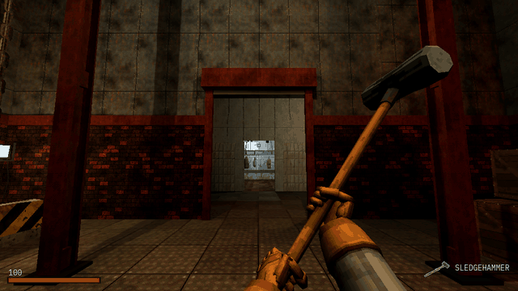

Tutorials › Lock the Player in a Boss Arena
How to Lock the Player in a Boss Arena in Godot 4
An Area3D over an arena's floor: the gates slam down behind the player and the boss starts, they rise when it dies, and the player's death puts the fight back as it was.

A boss fight starts when the door slams behind you. This script, on an Area3D over the arena's floor, is that moment: the player walks in, the gates drop behind them (solid at once, so nobody slips under) and the boss starts; the boss dies, and the gates rise and stay open; the player dies, and the arena puts everything back as it was before the fight, the player outside the door, so walking in again is the same fight. Its signals tell the rest of the game when the arena seals, when it lets the player go and when the fight starts over.
Script: boss_arena_lock.gd (MIT) · Godot 4.3 or newer · its folder on GitHub
How to use it
- Add an
Area3Dwith aCollisionShape3Dover the arena's floor and attachboss_arena_lock.gdto it. Leave the last two metres before the door out of the shape, so the gate drops behind the player, not on them. - Place each gate shut in its doorway: any
Node3Dwith its collision shapes under it (aStaticBody3Dwith a box will do). List them ingates; at the start the script lifts each one bygate_dropmetres and turns its collision off, and when the player walks in it drops them inslam_timeseconds, solid from the first frame. - Set
boss_pathto the boss: any node with adiedsignal. The script calls itsstart(player)when the arena seals and itsreset()on a retry, if it has them. - Put the player in the
playergroup (player_group) and give it adiedsignal and arevive()method. Setrestart_pathto aMarker3Doutside the door:retry_delayseconds after the player's death, the boss is reset, the gates rise and the player stands at the marker, revived. - Connect
sealed,releasedandretriedfor the rest: the music, alarm lights, a health bar.
What it needs
- Godot 4.3 or newer.
- A player that is a physics body (a
CharacterBody3D) in a group, and a boss with adiedsignal. A gate needs nothing but a collision shape under it.
Try it free
The Cordatix PSX Horror Free Sampler has a small cold store arena of Cordatix PSX Horror Boss Arena to try it in: its floor, its 6 m walls, the wall with the 1 m doorway and the small roll-up shutter's leaf (cordatix/psx_horror_boss_arena/meshes/parts/shutter_small__coldstore__leaf.tres). Put that mesh and a StaticBody3D with a 1 by 2.1 m box under a Node3D, place it shut in the doorway and it is a gate for this script, with gate_drop at 2.1. B in the sampler's demo room shows the pack's own lock there: walk in and the shutter slams shut behind you as the Offcut rises. The pack's kit adds gates of every kind (roll-up shutters, drop bars, sluice gates, a freezer door), alarm lights, a lock that waits on every enemy you list, the eight weapons, the player and the HUD.
How it was tested
In Godot 4.3 and 4.7.2, with stand-ins for the boss and the player, and the free sampler's shutter leaf as the gate: open at the start; sealed when the player walks in, the gate solid before it is down; the boss started with the player; opened when the boss dies and kept open; on the player's death, after the delay the boss reset, the player revived outside the door and the gate up; walking in again seals it again; a gate turned back on its way up shuts and stays solid.
The code
extends Area3D
## How to Lock the Player in a Boss Arena in Godot 4
## Cordatix Godot 4 PSX tutorials, MIT licensed: https://github.com/GoldenSparrow-Dev/cordatix-godot-psx-tutorials
## The devlog: https://cordatix.itch.io/cordatix-psx-horror-boss-arena/devlog/1741814/how-to-lock-the-player-in-a-boss-arena-in-godot-4-cordatix-psx-horror-boss-arena
## Lock the player in a boss arena (Godot 4.3+). Give this Area3D a CollisionShape3D over the arena's floor. When the
## player walks in, the gates slam down behind them (solid at once, so nobody slips under) and the boss starts; when
## the boss dies, the gates rise and stay open; when the player dies, the arena puts everything back as it was before
## the fight, the player outside the door, so walking in again is the same fight.
signal sealed
signal released
signal retried
## The gates: each a Node3D that drops by `gate_drop` metres to shut, its collision shapes anywhere under it.
@export var gates: Array[NodePath] = []
@export var gate_drop := 4.0
@export var slam_time := 0.3
@export var rise_time := 1.5
## The boss: any node with a `died` signal; start(player) and reset() are called if it has them.
@export var boss_path: NodePath
## Where the player comes back on a retry, and how long after the death.
@export var restart_path: NodePath
@export var retry_delay := 1.5
@export var player_group := "player"
var player: Node3D
var is_sealed := false
var is_cleared := false
var _retry_t := -1.0
var _shut := {} # gate: where it stands shut (as you placed it)
var _moving := {} # gate: the tween moving it now
func _ready() -> void:
body_entered.connect(_on_body_entered)
for p in gates:
var g := get_node(p) as Node3D
_shut[g] = g.position
g.position.y += gate_drop # authored shut: lift it out of the doorway
_set_solid(g, false)
var boss := get_node_or_null(boss_path)
if boss != null:
boss.died.connect(_on_boss_died)
func _on_body_entered(body: Node3D) -> void:
if is_sealed or is_cleared or _retry_t >= 0.0 or not body.is_in_group(player_group):
return
player = body
is_sealed = true
for p in gates:
var g := get_node(p) as Node3D
_set_solid(g, true) # solid now, before the gate is down
_move(g, _shut[g].y, slam_time, Tween.TRANS_QUAD, Tween.EASE_IN)
if player.has_signal("died") and not player.is_connected("died", _on_player_died):
player.died.connect(_on_player_died)
var boss := get_node_or_null(boss_path)
if boss != null and boss.has_method("start"):
boss.start(player)
sealed.emit()
func _open_gates() -> void:
for p in gates:
var g := get_node(p) as Node3D
var t := _move(g, _shut[g].y + gate_drop, rise_time, Tween.TRANS_SINE, Tween.EASE_IN_OUT)
t.tween_callback(_set_solid.bind(g, false)) # the way is clear once it is up
func _move(g: Node3D, y: float, time: float, trans: Tween.TransitionType, easing: Tween.EaseType) -> Tween:
if _moving.has(g):
(_moving[g] as Tween).kill() # a gate turned back half way: no old tween fights the new one
var t := create_tween()
t.tween_property(g, "position:y", y, time).set_trans(trans).set_ease(easing)
_moving[g] = t
return t
func _on_boss_died() -> void:
if not is_sealed:
return
is_sealed = false
is_cleared = true
_open_gates()
released.emit()
func _on_player_died() -> void:
if is_sealed and _retry_t < 0.0:
_retry_t = retry_delay
func _physics_process(delta: float) -> void:
if _retry_t < 0.0:
return
_retry_t -= delta
if _retry_t >= 0.0:
return
_retry_t = -1.0
is_sealed = false
_open_gates()
var boss := get_node_or_null(boss_path)
if boss != null and boss.has_method("reset"):
boss.reset()
var at := get_node_or_null(restart_path) as Node3D
if at != null:
player.global_transform = at.global_transform
if player.has_method("revive"):
player.revive()
retried.emit()
func _set_solid(gate: Node, on: bool) -> void:
for c in gate.find_children("*", "CollisionShape3D", true, false):
(c as CollisionShape3D).set_deferred("disabled", not on)
The devlog and the pack
The step-by-step walkthrough is the devlog How to Lock the Player in a Boss Arena in Godot 4 (Cordatix PSX Horror Boss Arena) on itch.io, written for Cordatix PSX Horror Boss Arena, a PS1-style asset pack by Cordatix for Godot 4, Unity, Unreal and Blender.